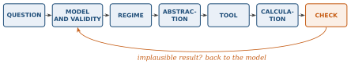

Why this chapter
Before studying a component, let us look at the person who will handle it. This chapter sets out what the engineering profession is, why analog electronics remains fundamental in an industry focused on digital technology, and above all the approach this course expects in front of every new circuit: do not start by calculating, but by deciding what needs to be known.
Chapter outline
| § | Content |
|---|---|
| 0.1 | The engineer’s profession |
| 0.2 | The gap between courses and practice |
| 0.3 | Why analog still matters |
| 0.4 | The two faces of the profession: analysis and design |
| 0.5 | The rule of the course: the chain of reasoning |
| 0.6 | Why analog electronics is good training ground |
| 0.7 | The rest of the programme |
| 0.8 | Summary |
| 0.9 | Exercises |
Learning objectives
By the end of this chapter, you will be able to:
define engineering as the act of recognising a problem, finding what is missing, closing the gap and checking the result;
recognise which of the roles of inventor, researcher or technician corresponds to a given engineering task;
explain, with a concrete example, why the physical world remains analog, even in a digital system;
distinguish analysis (predicting the behaviour of a known circuit) from design (finding a circuit for a desired behaviour), and say why analysis comes first;
apply the chain of reasoning of the course (question, model and validity, regime, abstraction, tool, calculation, check) in front of any new circuit.
0.1The engineer’s profession
The word “engineer” calls up several images at once. Three of them each describe a real part of the profession.
The inventor answers a need with a new solution: a patent and a prototype are enough, and industrialisation is another profession. The researcher extends what is known and builds models. The technician keeps real systems working: they measure, repair and keep things running.
These three roles share one act: someone meets a problem, understands it, and produces something useful. That is the engineering profession. Depending on the problem, you will move from one role to another. The fourth face, that of the designer, is the subject of section 0.4.
0.2The gap between courses and practice
This course teaches fundamentals. They form a common language that no engineer can do without. But after graduation, problems arrive without a chapter number: technology changes constantly, and components appear and then disappear.
Suppose a circuit contains a component you have never met. “It was not in the syllabus” is not a useful answer. A useful answer proceeds step by step. What does this component do? What do you already know that applies? What model can you derive from it? What remains to be learnt, and where: datasheet, book, simulation, measurement, colleague, artificial intelligence assistant? Once the thing is learnt, how do you check that you have understood it?
Key points
Learning engineering does not mean memorising a toolbox. It means recognising a problem, finding what is missing, closing the gap, and checking the result. Remember this sentence: it comes back in every chapter of the course.
0.3Why analog still matters
Digital technology is everywhere; it is therefore legitimate to ask why we still study analog electronics. The answer lies in where signals come from. Sensors, microphones, antennas, power supplies and communication channels produce and receive voltages and currents that vary continuously in time: analog quantities. The physical world is analog.
Radio illustrates this fact well. We use it here for its functions, not for its history (figure 0.1).
Amplification, filtering, oscillation, rectification, detection and interfacing all sit between the real world and the slightest digital calculation. Without the analog part, the digital part has nothing to process.
0.4The two faces of the profession: analysis and design
Let us come back to the fourth face announced in section 0.1, that of the designer. In front of a circuit, the engineer may seek to predict what it does, or seek the circuit that does what they want: the profession has two faces, summed up by two words (table 0.1).
| Analysis | Design | |
|---|---|---|
| Approach | Starts from a known circuit and predicts what it will do. | Starts from a desired behaviour and looks for the circuit that achieves it. |
| Tools | Laws, equations, models, characteristics, time-domain and frequency-domain methods. | Datasheets, simulation, layout, measurement, trial and error. |
The gap between the two matters: analysis tells what a circuit does, never which circuit to build. Choosing among several valid solutions is a matter of judgement under constraints, the part of engineering that resembles an art. This course trains both, analysis first: judging without models amounts to guessing.
0.5The rule of the course: the chain of reasoning
One habit comes before all others: do not start by calculating. Start by deciding what needs to be known. Then follow this chain, every time (figure 0.2).

Question: what needs to be known, and how accurately?
Model and validity: which representation of the component, and in what range is it valid?
Regime: DC, small signal, large signal, transient, steady state?
Abstraction: can a block be replaced by a black box (Thévenin, two-port, feedback)?
Tool: which law or which method (Kirchhoff, superposition, phasors, Laplace, simulation)?
Calculation: only now.
Check: is the result plausible, and are the assumptions of the model respected?
Key points
Choose the simplest valid model that gives the accuracy the problem requires, then check. A model is not the circuit: it is a representation chosen for a specific purpose. Its assumptions must be known before trusting its answer.
0.6Why analog electronics is good training ground
The same physical circuit can be seen through several models, from a detailed nonlinear description to a simple linear one. By working on analog circuits, you build the judgement needed to decide what to calculate, what to neglect, and whether a result makes physical sense. This habit carries over to every field of engineering.
0.7The rest of the programme (21 hours)
Chapter 1: From electrical quantities to linear models. Quantities, component relations, Kirchhoff’s laws; the diode makes the circuit transcendental; linear models and operating point; superposition, Thévenin, Norton; piecewise large-signal model; the need for small signal and the linearisation procedure; two-port network.
Chapter 2: Time-domain analysis of linear circuits. The RC circuit driven by a square wave, studied by four methods (measurement, differential equation, numerical calculation, Fourier and phasors) extended by the Laplace transform; resonance of an LC circuit; then from the relaxation oscillator to feedback.
Chapter 3: The diode and its applications. Exponential model, large-signal and small-signal models; rectification, peak detection, voltage doubler, clamper, freewheeling diode; case study of a biased LED; Graetz bridge, precision rectifier and synchronous detection.
Chapter 4: The bipolar transistor and its biasing. Characteristics, load lines, switching, small-signal
model; amplifier classes; bias circuits; Zener current source, current mirror and cascode. Chapter 5: The three basic amplifier configurations. Common emitter, common collector and common base seen as two-port networks; coupling and decoupling; output resistance
and cascode; cascaded stages; high-frequency limit (Giacoletto model, Miller effect).
Chapter 1 draws the map and chapter 2 adds time to it. Chapters 3 to 5 travel through it on real components, the diode then the bipolar transistor and its configurations, introducing theory only when it is needed. Each component follows the same sequence: characteristic, operating point and biasing, small-signal model, then superposition to extract the circuit quantities.
The first reflex
In chapter 1, the first question will therefore not be “which equation applies here?” but “how should this circuit be represented to answer the question, efficiently and with acceptable accuracy?”
0.8Summary
The engineer recognises a problem, finds what is missing, closes the gap and checks the result. Inventor, researcher and technician are three facets of one act.
Real problems arrive without a chapter number: you must know how to learn a new component and check that you have understood it.
The physical world is analog; the analog part of a system (amplify, filter, oscillate, rectify, detect, interface) comes before any digital processing.
Analysis predicts the behaviour of a known circuit; design looks for a circuit for a desired behaviour. Analysis is learnt first.
The rule of the course: question, model and validity, regime, abstraction, tool, calculation, check. A model is not the circuit.
0.9Exercises
The exercises for this chapter are collected in the tutorial problem book, in the section “Course application exercises” of chapter 0; their answers are in the tutorial solutions book, in the same place.